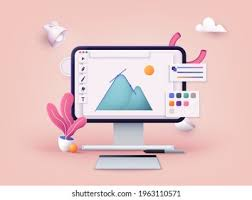

What can I do for you...?
Frontend Developer
Proficiency in HTML, CSS, and JavaScript, dedicated to
building engaging digital experiences. Whether you need
interactive games like Tic Tac Toe and Rock-Paper-Scissors,
efficient timers, or clone websites, I have the skills and
creativity to bring your ideas to life.

Graphic
Designing
Designing
Graphic Designer committed to delivering
dynamic visual solutions. From captivating logos and brand
materials to innovative layouts and illustrations, I bring your
vision to vibrant life with creativity and precision.
Prompt
Engineering
Engineering
Crafting effective prompts that enhance AI functionality
and user engagement. Whether it’s for chatbots, search queries, or
complex data analysis, I'm here to help you optimize your AI
interactions to achieve remarkable results.
Practical
Projects
Projects
I specialize in turning theoretical knowledge into real-world
applications through practical projects. From simple web apps to
more complex software solutions, I can help bring your ideas to
life, ensuring they are both innovative and technically sound.
Research
Work
Work
I delve into cutting-edge research to
uncover new insights and solutions in technology and science. My focus is on meticulous analysis and innovation, aiming to
contribute valuable findings to your projects and challenges.
Work Experiences
Intern @ShadowFox
As an intern I have been honing my frontend skills by building user-friendly interfaces while also venturing into backend to understand full-stack practices. My role involves collaborating with experienced developers in an agile environment, contributing to diverse web projects that emphasize responsive design, and improving my proficiency in both client and server-side technologies. This opportunity is expanding my capabilities in delivering comprehensive web solutions that enhance user engagement and meet modern standards.
Virtual Tech Club
As the Founder and Leader of the Virtual Tech Club at my college, I spearhead a vibrant online community dedicated to the exploration of data structures, algorithms, programming, and cutting-edge technologies. My role involves organizing interactive online workshops, guest lectures, and coding challenges to bolster the technical and problem-solving skills of students and members. I foster a collaborative environment that encourages the sharing of resources and ideas, ensuring our members remain at the forefront of technological advancements and industry demands.
Research for projects
I have been actively engaged in collecting and analyzing data through comprehensive surveys and extensive internet research. Leveraging advanced AI tools, I effectively processed and interpreted large datasets to uncover meaningful insights. This approach allowed me to contribute to the development of evidence-based strategies, ensuring our findings were not only relevant but also actionable. My dedication to rigorous research methodologies and innovative use of technology consistently supported our goals of delivering impactful, data-driven outcomes.
Featured Project
The canteen website
Problem statementIn college canteens, managing orders efficiently and minimizing wait times are crucial for enhancing student satisfaction. Traditional ordering methods often lead to long queues and slow service, particularly during peak hours.
Solution
This project introduces a streamlined, web-based QR code ordering system designed specifically for college canteens. By allowing students to place orders from anywhere on campus using their mobile devices, the system significantly reduces physical queues and wait times.
Key Features
1. User Interface.
2. Unique QR codes for every bill.
3. Dynamic data handling.
Try website: Bhojnalaya More Projects